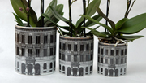
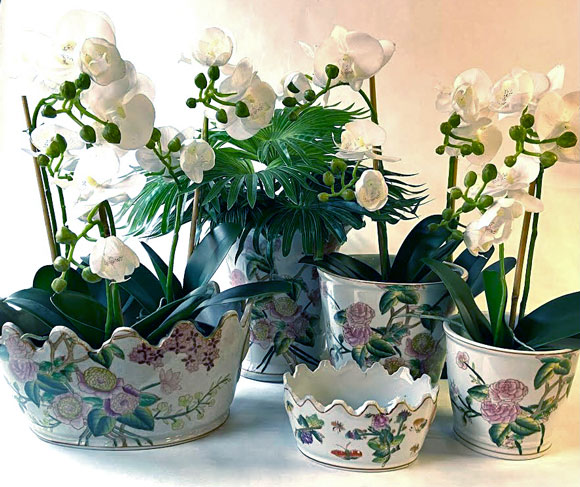
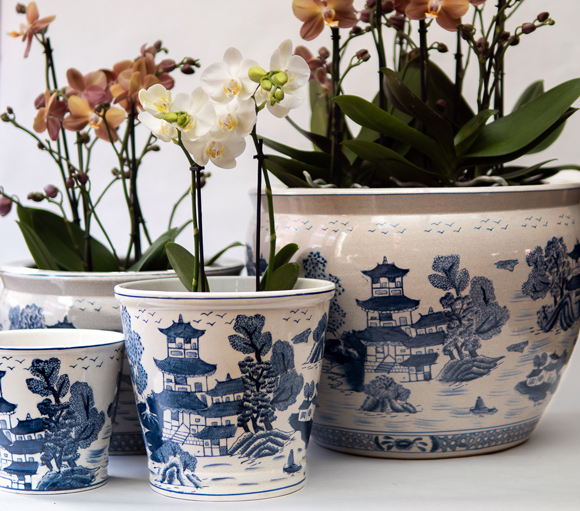
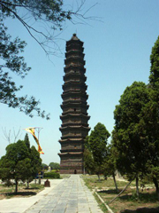
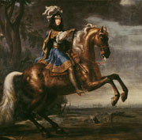
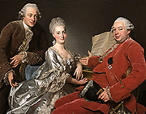

Entering Djurgården, the the royal pleasure garden in the middle of Stockholm, you will pass a cast iron gate. We are inspired by this gate and many other iron fences in this charming park.

BACK IN STOCK. TESSIN
This bestseller looks at home in traditional as well as modern interiors.

Summer, summer, summer, light and nature excels.
Our classic line SOMMAR is a nice way of celebrating the abundance ...

PAGOD is a classic Chinese pattern that has been copied by many European factories, even by Swedish companies. The pattern is available on several different pots.
Simply Scandinavia produces the most genuine reproductions of Chinese porcelain, planters, vases, bowls and plates of traditional design. East Indian is the name of the porcelain patterns which were exported to Europe originating in the traditional patterns that the Chinese themselves appreciated. Export porcelain on the other hand is considered to be the designs and patterns that the European trade companies ordered in China based on Western drawings, meticulously copied by Chinese craftsmen. Each family of means ordered dinner services with their own family crest.

Pagodas are Buddhist buidings for housing holy manuscripts or relics.
In China they developed into tall towers with several floors.

The main event during the coronation festivities was a so-called Carousel, a performed and predetermined battle between different peoples.
The court painter Ehrenstral was tasked with creating the magnificent costumes and decor, and later to perpetuate the events in a richly illustrated book.
The King won the battle, naturally!

The richest family in Sweden in the 18th century was the Grills.
The family had immigrated from Italy by way of the Netherlands and Germany.
In Sweden they built up their great fortune through interests in iron mills, ship trade, banking etc.